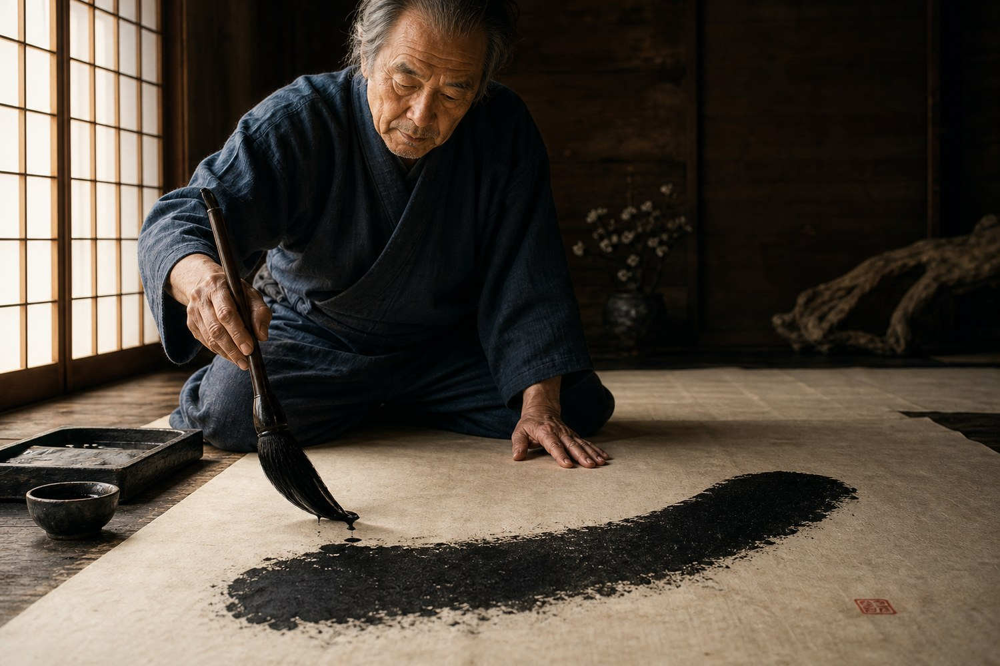
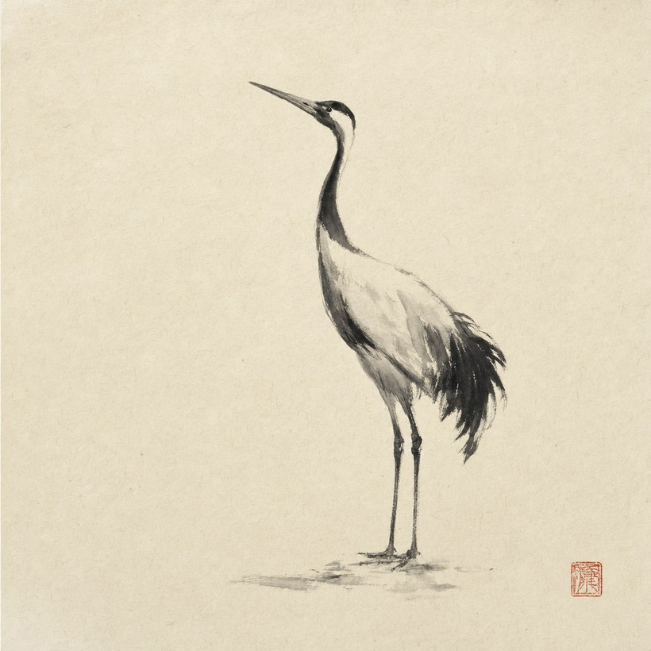
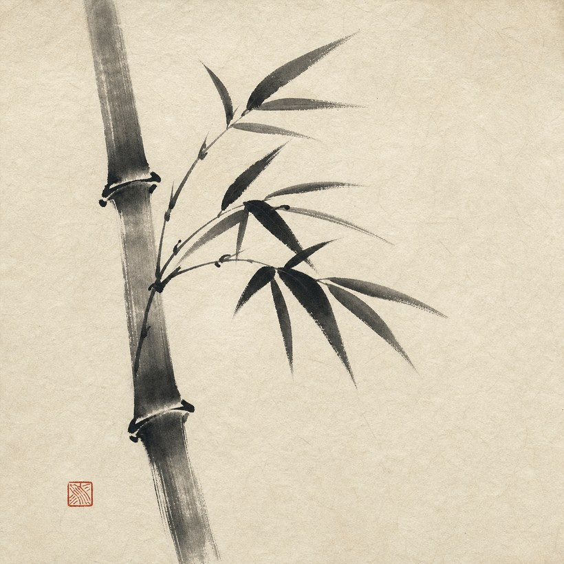
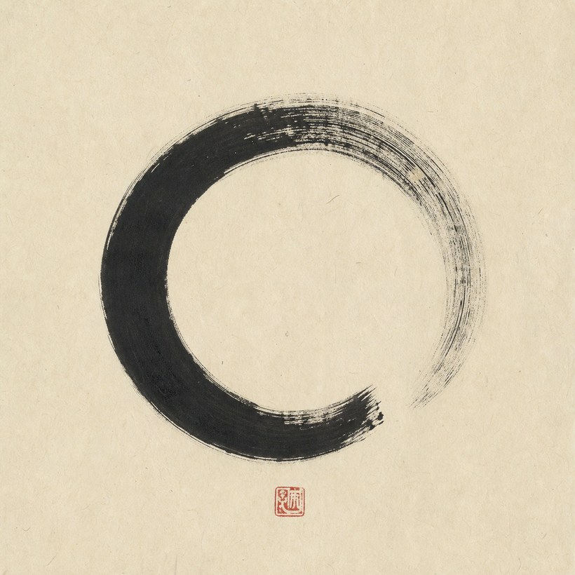

Taller de sumi-e y caligrafía · desde 1967
El vacío
también
se pinta
Molemos la barra de tinta sobre la piedra hasta que el negro despierta. Entonces, una respiración: el pincel toca el papel una sola vez y ya no vuelve.
墨 Pasa el cursor sobre la casa — la tinta se extenderá en el papel a tu paso.

La casa
Un trazo
no se corrige
El sumi-e no admite arrepentimiento. No hay capas, no hay goma, no hay segundo intento sobre el mismo papel. Lo que la mano duda, la tinta lo delata; lo que la mano sabe, el papel lo guarda para siempre.
Por eso aquí no enseñamos a dibujar: enseñamos a respirar antes de mojar el pincel. La grulla, el bambú y el círculo que verás abajo salieron cada uno de una sola exhalación.
Obras de la casa
Salieron de
una respiración

La grulla · 鶴
Tinta sobre washi · 33 trazos · una sesión
Se pinta de arriba abajo, como cae la mirada del ave.
El bambú · 竹
Tinta sobre washi · 12 trazos · una sesión
Cada nudo es una pausa; el tallo, una decisión sin freno.
El enso · 円相
Tinta sobre washi · 1 trazo · una respiración
El círculo se deja abierto: nada terminado está vivo.El método de la casa
Los cuatro
tesoros
- 筆El pincel · fude. Pelo de cabra para el agua, de comadreja para el nervio. Se sostiene vertical, como quien escucha.
- 墨La tinta · sumi. Una barra de hollín de pino y cola, molida a mano. El negro no se compra líquido: se despierta.
- 紙El papel · washi. Fibra de morera que bebe distinto en cada punto. El papel decide la mitad del trazo.
- 硯La piedra · suzuri. Donde el agua y la barra se encuentran. Moler la tinta es ya el principio de pintar.
¿Un nombre, un haiku, un animal?
Encarga tu
trazo
Pintamos por encargo sobre washi montado, o te enseñamos a sostener el pincel en el taller de los sábados. Cada pieza sale firmada con el sello de la casa.
Reservar el pincelCallejón de la Tinta 7 · Barrio de Yanaka · Mar–Sáb 10:00–18:00